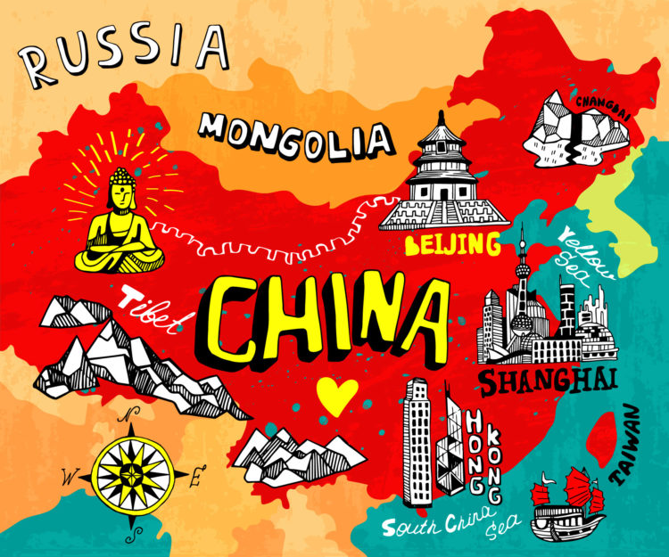
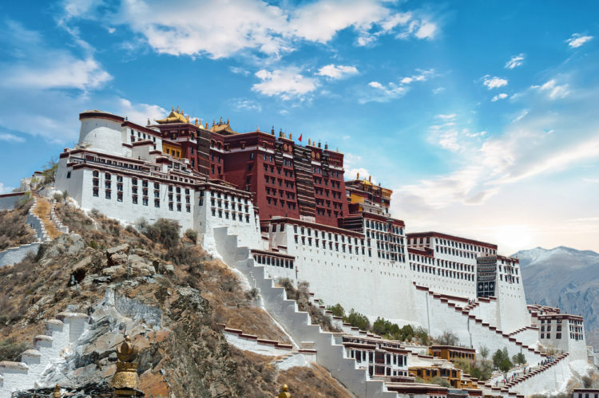
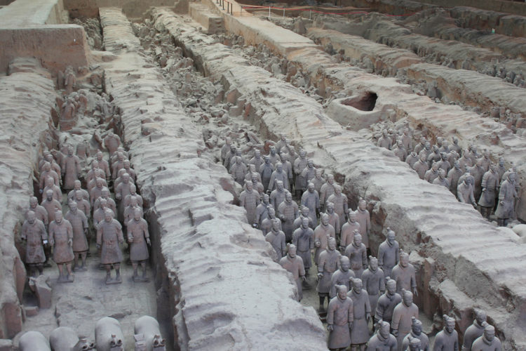
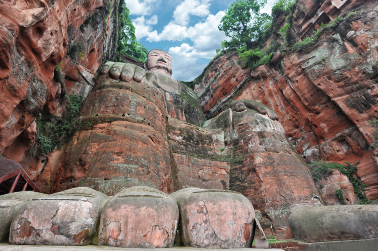
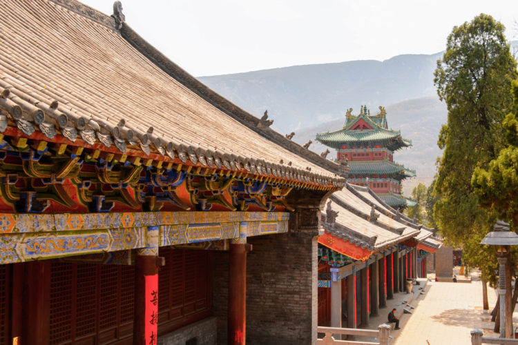

China
Китай
Обзор
Как ни парадоксально это звучит, Китай — страна для «толстосумов». Туристу с абсолютно любым уровнем достатка ничего не стоит почувствовать себя здесь Скруджем Макдаком и Скупым рыцарем в одном лице. Например, купив для начала коллекционный «Ролекс» за 10 баксов и пару «Ливайсов», но уже чуть подороже, долларов за 12, — и без всяких уничижительных отметок «сделано в Китае». Затем, вдоволь потешив самолюбие состоятельного человека, заняться собой на главном оздоровительно-отдыхательном курорте Китая — острове Хайнань. И убедиться в том, что фразу «нельзя экономить на своем здоровье» сказал человек, явно никогда там не бывавший. К тому же, Китай чудесным образом сочетает два совершенно разных архитектурных стиля: огромные бетонно-стеклянные, подавляющие своими размерами монстры небоскребов и маленькие домики с покатыми крышами, фигурками львов и благовониями. В общем, парадоксальная Азия в самом явном ее проявлении — таким предстает Китай перед любознательными путешественниками.
Китай удивительно разный. Здесь и огромные современные мегаполисы из стекла и бетона, и пляжный и горнолыжный отдых, и одни из лучших в мире лечебно-оздоровительных курортов. И все это многообразие объединяет одно: несмотря на всю «европеизированность» больших городов, в Китае очень сильны древние традиции, по которым издавна и по сей день живет вся страна.
Как добраться
Из Казахстана выполняет регулярные рейсы из Алматы: в Пекин (7,5 часов в воздухе), Шанхай (9 часов) и Гонконг (10 часов). Также в Пекина можно долететь регулярными рейсами «Китайских авиалиний», а до Шанхая — рейсами «Чайна Истерн».
«Эс Севен» предлагает прямые рейсы в Пекин из Алматы, из Семея. В сезон из Алматы поднимают чартеры до Хайнаня.
Прямых рейсов из Астаны в Китай нет, но можно долететь с одной пересадкой в Алматы.
В Китай через Семипалатинск (Семей)
Пожалуй, самый простой и наиболее популярный среди жителей вко путь в Китай через Семей — это проезд через город Семей. До 2007 года этот город назывался Семипалатинск, но и сейчас часто употребляется прежнее название, особенно в России (например, на автовокзалах билеты продают именно в Семипалатинск, а не в Семей). Поэтому в голове нужно держать оба названия.
Отели
В стране есть гостиницы мировых и местных китайских «цепочек». Казахстанские туристы заселяются в основном в отели 4-5*. Традиционная «звездная» классификация относится только к международным «цепочкам», у китайских гостиниц есть своя.
Например, китайский постоялый двор приравнивается к европейским хостелам, дом для гостей — к 2-3*, винный дом по уровню состояния номеров и сервису примерно соответствует 4*, а пятизвездочные отели не предусмотрены.
Средняя цена двухместного номера — около 100 EUR в сутки. Ночлег в отеле 2* обойдется примерно в 25-45 EUR, в «трешке» — в 45-70 EUR, в «четверке» — в 90-120 EUR и порядка 150-200 EUR в гостинице 5*. Цены зависят от региона. В Пекине или Гонконге будет на порядок дороже, чем в Гуанчжоу или маленьких городах.
Напряжение в электросети стандартное — 220 В. Как правило, номера оборудованы универсальными розетками. Если вилка не подходит к розетке, переходник найдется у обслуживающего персонала. Большинство розеток в Гонконге сделаны под трехштекерную вилку «британского» типа. Адаптер стоит копейки, а в отелях его предоставляют и вовсе бесплатно.
достопримечательности

Китай — удивительная страна востока, которая полна своих тайн и загадок. Обширные территории Китая раскинулись на просторах Азии в её центральной и восточной частях. История этой азиатской страны исчисляется тысячелетиями. Сегодня эта страна хранит богатейшее историческое наследие прошлого и имеет многообещающие перспективы будущего.
1. Великая Китайская стена (Северный Китай) -
В мире, пожалуй, нет такого сооружения, которое бы вызывало столько интереса в кругу учёных, путешественников, строителей и простых обывателей, как Великая Китайская стена. Процесс её возведения породил массу слухов и поверий, стоил невероятных усилий и колоссальных затрат, лишив жизни сотни тысяч людей, участвовавших в строительстве.

Великая Китайская стена является внушительной достопримечательностью Китая, грандиозным памятником древности и считается самым длинным сооружением в мире, возведённым в целях обороны. Она проходит по Северному Китаю на протяжении почти 9 тыс. километров. По другим данным, если учитывать все повороты и изгибы стены, её длина составит около 21 тыс. километров. Высота сооружения составляет около 7 метров. А ширина — 6 метров. С внутренней стороны стена защищена специальным барьером в высоту 0,9 метра.
2. Дворец Потала (г. Лхаса, Тибет) -

Царский дворец и буддийский храмовый комплекс Лхаса, расположенный в Тибете на высоте 3,8 км над уровнем моря, представляет собой важную достопримечательность Китая в числе святынь. Дворец выполнял роль основной резиденции Далай-Ламы. Ни один дворец в мире не расположен так высоко в горах, как Потала. Само название комплекса произошло от названия священной индийской горы, на которой, согласно легендам, обитает божество Гуань Инь — покровительница Южного моря и его рыбаков.
Каждый год дворец Потала посещают тысячи туристов и паломников. Путь в гору продолжителен, а на середине пути есть масштабная терраса площадью 1600 кв. метров. Plt согласно историческим записям, с 1653 года проводятся торжественные священные церемонии.
3. Терракотовая армия (г. Сиань, провинция Шэньси) -

Недалеко от города Сиань, в провинции Шэньси, располагается колоссальная по размаху достопримечательность Китая — многотысячный военный гарнизон, но не военных, а глиняных статуй ростом 1,9 — 1,95 метра. Это чудо света известно как Терракотовая армия, а его история насчитывает более 2 тысяч лет. Всего подземные захоронения включают минимум 8099 статуй китайских воинов и их лошадей, изготовленных из терракотовой глины. Необычная глиняная армия была захоронена с первым императором Цинь-Шинь Шихуанди, объединившим царства Китая в единое государство.
Как была обнаружена подземная находка? Однажды земледелец Янь Джи Ван, выкапывая на своём участке колодец, обнаружил под землёй фигуру древнего воина, а последующие раскопки показали, что статуя здесь далеко не одна. Позже археологами было обнаружено несколько тысяч таких воинов — строительство Терракотовой армии началось ещё в 247 г. до н.э., и в нём принимало участие около 700 тысяч мастеров. Янь Джи в своё время обнаружил главный боевой отряд в 6000 статуй, в 1980 году была откопана вторая колонна в 2000 статуй, в 1994 году — генштаб высших военачальников. Раскопки продолжаются и по сей день.
Но зачем китайцам надо было тратить столько сил и времени на создание такого масштабного исторического памятника? Дело в том, что первый император Китая Цинь Шихуанди в своё время распорядился захоронить с собой армию из 4 тыс. молодых воинов, но его советники смогли убедить его не идти на этот варварский поступок. Тогда и было решено вместо людей соорудить глиняные фигуры воинов.
4. Гигантский Будда в Лэшане (провинция Сычуань) -

В провинции Китая Сычуань, под городом Лэшань, прямо в скале высечена огромная скульптура Будды высотой 71 метр — одна из самых древних в мире скульптур. Достопримечательность Китая в виде гигантского Будды располагается в месте слияния трёх рек, встречные потоки которых образуют опасные водовороты. В этих потоках погибло немало местных жителей и рыбаков, поэтому, согласно преданию, монах Хай Тун решил укротить стихию, вырубив в скале образ божества. В 713 году он приступил к работе, но за годы своей жизни он успел высечь гигантское изваяние Будды только до колен, а позже работу продолжили последователи монаха, и примерно спустя век статуя была готова.
Вырубая скульптуру, рабочие выбрасывали осколки скалы прямо в реку, что позволило частично засыпать бурные водные потоки. Вот так и вышло, что Будда укротил водную стихию.
До середины 17 века каменное тело Будды было скрыто 13-этажным храмом Дасянгэ, после чего храм сгорел, а статуя Будды открылась всеобщему обзору. Огромный Будда восседает лицом к священной горе Эмэйшань, его голова высотой 15 метров заканчивается там, где заканчивается и сама скала. На Будде каменная туника, через складки которой происходит отток дождевых вод, что защищает горную породу от эрозии. В окружающих стенах высечены изображения 90 бодхисаттв, а в изголовье сооружена 38-метровая пагода и храм с парком.
5. Шаолинь (провинция Хэнань) -

Монастырь Шаолинь — старейшая буддийская святыня и известная на весь мир достопримечательность Китая, расположенная в провинции Хэнань, в необычайно красивом обрамлении лесов и гор. Это место издавна хранило священный дух, ведь ещё в 5 веке н.э. здесь был основан даосский храм, который в период религиозных притеснений заняли сторонники буддизма. К этому времени буддизм уже занял основательные позиции на севере Китая, и это способствовало основанию новых монастырей.
Основателем монастыря Шаолинь считается индийский проповедник Бато. А человеком, благодаря которому в Шаолине возникали и развивались боевые искусства, был другой индийский миссионер — Бодхидхарма. Прибыв в Шаолинь в 527 году, Бодхидхарма привил монахам монастыря боевой дух. Он разработал систему специальных упражнений, призванных укреплять физическую форму при долгом нахождении в состоянии медитации. Этот комплекс упражнений впоследствии заложил основу всех направлений боевых искусств Китая.
Место основания монастыря было выбрано неслучайно — на горе Суншань, по форме напоминающей лотос. На протяжении столетий Шаолинь неоднократно менял свой внешний облик, однако в 20 веке, с открытием здесь туристического центра, он прошёл тотальную реставрацию.
Визы
Гражданам РК и СНГ для посещения страны требуется виза. В Гонконг визу оформлять не нужно, если срок пребывания не превышает 14 дней. Для путешествующих через Китай в третью страну предусмотрены безвизовые транзиты с выходом в город на 24, 72 и 144 часа в зависимости от аэропорта прилета.
Ввоз национальной валюты ограничен суммой в 6000 CNY. Ввоз и вывоз иностранной валюты неограничен. Если за время пребывания в Китае турист не израсходовал всю местную валюту, перед отъездом он может обменять ее на нужную иностранную, предъявив справку об исходном обмене (действительна в течение полугода).
Запрещен ввоз оружия, порнографии, взрывчатых веществ, наркотиков и ядов. Запрещен вывоз исторических документов, ценных предметов и произведений искусства, а также живописи и графики без чека магазина, подтверждающего законность покупки, или разрешения на вывоз от Китайского Административного Отдела по культурным ценностям при Министерстве культуры КНР.
В Макао ввоз и вывоз валютных ценностей, в том числе и выигрышей в казино, антиквариата, предметов старины и искусства, золотых и ювелирных украшений, электроники не ограничен.
Связь и Wi-Fi
Мобильная связь в Китае недорогая и качественная. Чтобы сэкономить, имеет смысл купить сим-карту одного из местных операторов: China Mobile, China Unicom или China Telecom. Тарифные планы у всех примерно одинаковые, но многие туристы отмечают, что за пределами крупных городов лучше всего ловит China Mobile.
Сим-карты продают в салонах связи и газетных киосках, стоят они 30-50 CNY, на счету при этом будет лежать 10 CNY, в большинстве торговых точек для покупки требуется паспорт. Карточки для пополнения счета продают там же, кроме того, можно пополнить счет наличными через специальные терминалы, но не зная китайского, сделать это практически невозможно. Некоторые сим-карты снабжены инструкцией на английском, при покупке нужно предупредить продавца, что вам нужна именно такая. Также заранее стоит уточнить, поддерживает ли выбранный тарифный план мобильный интернет (3G) — в Китае это не предусмотрено по умолчанию. Минута разговора с Россией обойдется в среднем в 5 CNY, местные звонки, разумеется, дешевле. Иногда международную связь нужно подключать дополнительно.
Свяжитесь с нами!
Адрес
Семей, ул. Б.Момышулы 15
Semey, st. B. Momyshuly 15
ПОЗВОНИТЕ НАМ
87475122545
87021963485
ЧАСЫ РАБОТЫ
Понедельник Пятница ...10.00 - 20.00
Суббота ...10.00 - 18.00
Воскресения ...Закрыто